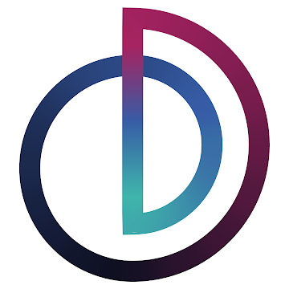
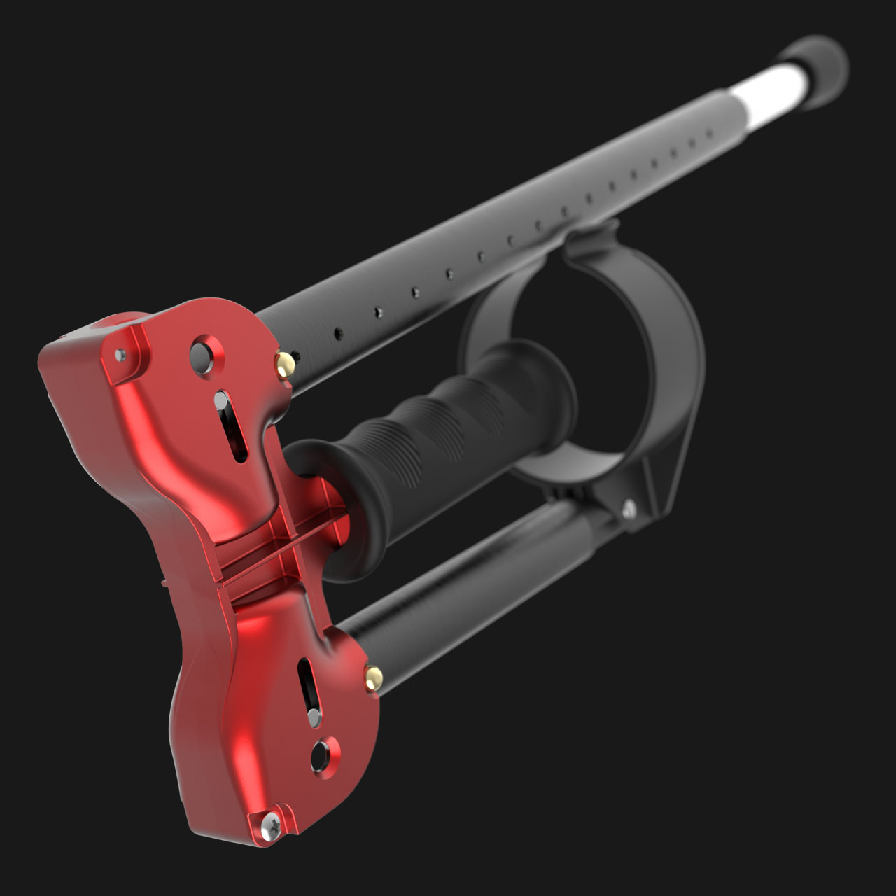

Manufacturing trade-off tools
Estimate where each process becomes commercially sensible before locking in product architecture.
Belfast, Northern Ireland product design engineering
Orion Design is Andrew Hunter's product design engineering practice in Belfast. I work with first-time founders who have an idea but are not sure what comes next, and with established product teams that need experienced external design support. From early concepts and prototypes to design for manufacture, supplier conversations, production strategy, and launch decisions, the aim is the same: make the next step clearer before it becomes expensive.
Compare manufacturing routes, estimate costs, review concepts, and bring clearer assumptions into the next conversation.
Get in touch when you need experienced help interpreting the trade-offs for a real product, supplier conversation, or launch plan.
Product-development experience includes work with
Start where you are
Product development can feel opaque if you have never done it before, and surprisingly fragmented even when you have. Pick the description that is closest to your situation and I will point you to a useful first step.
Recommended starting point
You will get one practical tool, one useful guide, and the most relevant way Orion can help.
Capabilities
Use the tools for a first pass, or bring the question directly to Orion when you need experienced judgement. The work usually centres on what to prototype next, which process to back, how to reduce complexity, and whether the product case is strong enough to proceed.

Estimate where each process becomes commercially sensible before locking in product architecture.
Make value and impact visible early enough to influence specification, not just downstream reporting.
Connect commercial feasibility, technical readiness, sustainability, and human value in one place.
Representative work
These projects show the range of problems involved: technical packaging, mechanism development, consumer products, and design-for-manufacture work where the right early decision saves time, cost, and rework later.

Representative spin-out product development work where technical packaging, usability, and manufacturable enclosure thinking had to progress together.
View representative case studies
Concept-to-manufacture work that depended on form development, portability, part strategy, and a realistic view of when to commit to production tooling.
Explore product design services
Mechanism-led development work where geometry, manufacturability, detailing, and controlled iteration mattered more than superficial styling.
Read about Andrew HunterStart-to-finish case study
Work with MLT Industries followed the product journey from early concept and prototypes through international supplier sourcing, manufacture, and later product-family development — with Orion in Belfast and the client in Australia.
Read the MLT Industries case studyearly product concept developed into a manufacturable physical product
geographies connected: Belfast, Australia, and international prototype/manufacturing suppliers
concept → prototype → production → product-family extension
Tool library
Use these tools to compare manufacturing routes, test assumptions, and validate decisions before committing budget. They answer specific questions — but product development is not a series of isolated decisions. The output of one feeds the input of another.
That is why every tool can save its result to your Product Plan Builder, which arranges them into the seven questions a manufacturer, investor or grant panel will ask, ready to print or share.
Compare setup cost and unit cost across 3D printing, CNC machining, vacuum casting, and injection moulding so the decision is driven by data, not intuition.
Open ToolRank a product concept against a scored dataset and inspect its balance on a radar chart to separate ideas that are merely interesting from ideas that deserve momentum.
Open ToolEstimate manual assembly labour at concept stage using part count, fastening logic, handling effort, and QA checks so labour cost does not get locked in too early.
Open ToolCompare footprint drivers across material, manufacturing process, transport, and use-phase assumptions to make sustainability a product-legitimacy question, not just a materials question.
Open ToolPrefer a phased route?
Some projects need more than a standalone calculator. The ready-to-launch roadmap groups the work into practical phases so you can move from idea validation to launch planning with less wasted effort.
An interactive walk through the seven stages: what happens at each, typical timescales, what drives cost, and the pitfalls to avoid.
Explore idea to manufactureStart with the biggest risk: concept strength, engineering complexity, manufacturing route, or commercial viability.
Open the ready-to-launch roadmapBrowse the articles by concept, manufacturing, sustainability, or launch so the next decision is grounded in context, not just a number.
Browse the guidesEngineering essays
When a calculator is not enough, the guides explain the trade-offs, common mistakes, and follow-on decisions that matter most.
Browse guidesAlso free: printable checklists, a manufacturing process comparison, and what's new on the site.
Break-even is only one part of the manufacturing decision. Timing, demand certainty, and design stability matter too.
Read guideThe Product Purpose Framework treats sustainability as a product-legitimacy question, not just a materials question.
Read guidePart count, join count, and reorientation are all signals of recurring labour before detailed industrial engineering begins.
Read guideConnect reachable demand, unit economics, operating cost, and payback so a promising concept is tested properly before scale.
Read guide